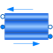

BasicHXSimple heat exchanger model |

|
Diagram
{kind=link}
Information
This information is part of the Modelica Standard Library maintained by the Modelica Association.
Simple model of a heat exchanger consisting of two pipes and one wall in between. For both fluids geometry parameters, such as heat transfer area and cross section as well as heat transfer and pressure drop correlations may be chosen. The flow scheme may be concurrent or counterflow, defined by the respective flow directions of the fluids entering the component. The design flow direction with positive m_flow variables is counterflow.
Parameters (38)
| length |
Value: Type: Length (m) Description: Length of flow path for both fluids |
|---|---|
| nNodes |
Value: 2 Type: Integer Description: Spatial segmentation |
| modelStructure_1 |
Value: Types.ModelStructure.av_vb Type: ModelStructure Description: Determines whether flow or volume models are present at the ports |
| modelStructure_2 |
Value: Types.ModelStructure.av_vb Type: ModelStructure Description: Determines whether flow or volume models are present at the ports |
| crossArea_1 |
Value: Type: Area (m²) Description: Cross sectional area |
| crossArea_2 |
Value: Type: Area (m²) Description: Cross sectional area |
| perimeter_1 |
Value: Type: Length (m) Description: Flow channel perimeter |
| perimeter_2 |
Value: Type: Length (m) Description: Flow channel perimeter |
| use_HeatTransfer |
Value: true Type: Boolean Description: = true to use the HeatTransfer_1/_2 model |
| area_h_1 |
Value: Type: Area (m²) Description: Heat transfer area |
| area_h_2 |
Value: Type: Area (m²) Description: Heat transfer area |
| s_wall |
Value: Type: Length (m) Description: Wall thickness |
| k_wall |
Value: Type: ThermalConductivity (W/(m·K)) Description: Thermal conductivity of wall material |
| c_wall |
Value: Type: SpecificHeatCapacity (J/(kg·K)) Description: Specific heat capacity of wall material |
| rho_wall |
Value: Type: Density (kg/m³) Description: Density of wall material |
| area_h |
Value: (area_h_1 + area_h_2) / 2 Type: Area (m²) Description: Heat transfer area |
| m_wall |
Value: rho_wall * area_h * s_wall Type: Mass (kg) Description: Wall mass |
| allowFlowReversal |
Value: system.allowFlowReversal Type: Boolean Description: allow flow reversal, false restricts to design direction (port_a -> port_b) |
| energyDynamics |
Value: system.energyDynamics Type: Dynamics Description: Formulation of energy balance |
| massDynamics |
Value: system.massDynamics Type: Dynamics Description: Formulation of mass balance |
| momentumDynamics |
Value: system.momentumDynamics Type: Dynamics Description: Formulation of momentum balance, if pressureLoss options available |
| Twall_start |
Value: Type: Temperature (K) Description: Start value of wall temperature |
| dT |
Value: Type: Temperature (K) Description: Start value for pipe_1.T - pipe_2.T |
| use_T_start |
Value: true Type: Boolean Description: Use T_start if true, otherwise h_start |
| p_a_start1 |
Value: Medium_1.p_default Type: AbsolutePressure (Pa) Description: Start value of pressure |
| p_b_start1 |
Value: Medium_1.p_default Type: AbsolutePressure (Pa) Description: Start value of pressure |
| T_start_1 |
Value: if use_T_start then Medium_1.T_default else Medium_1.temperature_phX((p_a_start1 + p_b_start1) / 2, h_start_1, X_start_1) Type: Temperature (K) Description: Start value of temperature |
| h_start_1 |
Value: if use_T_start then Medium_1.specificEnthalpy_pTX((p_a_start1 + p_b_start1) / 2, T_start_1, X_start_1) else Medium_1.h_default Type: SpecificEnthalpy (J/kg) Description: Start value of specific enthalpy |
| X_start_1 |
Value: Medium_1.X_default Type: MassFraction[Medium_1.nX] (kg/kg) Description: Start value of mass fractions m_i/m |
| m_flow_start_1 |
Value: system.m_flow_start Type: MassFlowRate (kg/s) Description: Start value of mass flow rate |
| p_a_start2 |
Value: Medium_2.p_default Type: AbsolutePressure (Pa) Description: Start value of pressure |
| p_b_start2 |
Value: Medium_2.p_default Type: AbsolutePressure (Pa) Description: Start value of pressure |
| T_start_2 |
Value: if use_T_start then Medium_2.T_default else Medium_2.temperature_phX((p_a_start2 + p_b_start2) / 2, h_start_2, X_start_2) Type: Temperature (K) Description: Start value of temperature |
| h_start_2 |
Value: if use_T_start then Medium_2.specificEnthalpy_pTX((p_a_start2 + p_b_start2) / 2, T_start_2, X_start_2) else Medium_2.h_default Type: SpecificEnthalpy (J/kg) Description: Start value of specific enthalpy |
| X_start_2 |
Value: Medium_2.X_default Type: MassFraction[Medium_2.nX] (kg/kg) Description: Start value of mass fractions m_i/m |
| m_flow_start_2 |
Value: system.m_flow_start Type: MassFlowRate (kg/s) Description: Start value of mass flow rate |
| roughness_1 |
Value: 2.5e-5 Type: Roughness (m) Description: Absolute roughness of pipe (default = smooth steel pipe) |
| roughness_2 |
Value: 2.5e-5 Type: Roughness (m) Description: Absolute roughness of pipe (default = smooth steel pipe) |
Connectors (4)
| port_b1 |
Type: FluidPort_b |
|
|---|---|---|
| port_a1 |
Type: FluidPort_a |
|
| port_b2 |
Type: FluidPort_b |
|
| port_a2 |
Type: FluidPort_a |
Components (4)
| system |
Type: System Description: System properties |
|
|---|---|---|
| wall |
Type: WallConstProps |
|
| pipe_1 |
Type: DynamicPipe |
|
| pipe_2 |
Type: DynamicPipe |
Used in Examples (1)
|
Modelica.Fluid.Examples.HeatExchanger simulation for the heat exchanger model |